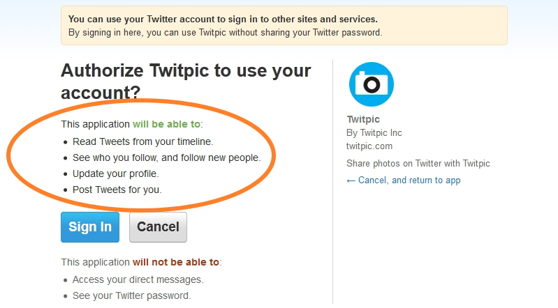
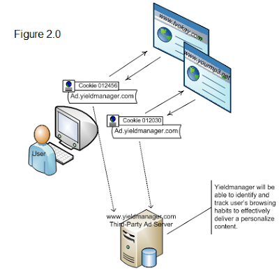
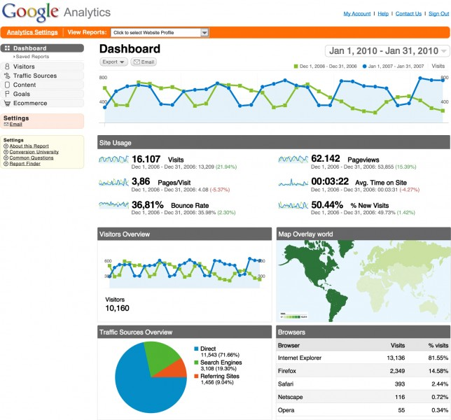
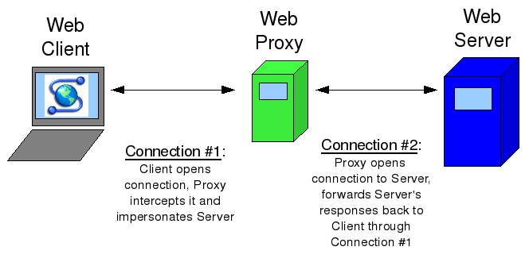
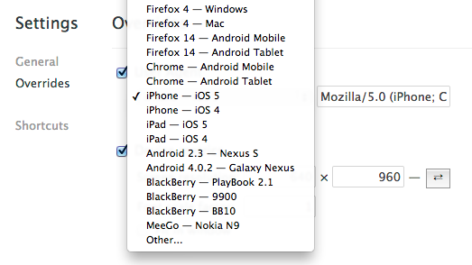
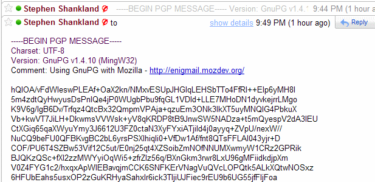

Chapter 16 Private Eye
We've talked a bit about security, but let's now shine a spotlight on something that's closely related: privacy. In general, privacy refers to keeping your personal information, whether that be your Social Security number or your web browsing history, hidden from the prying eyes of others. On the Internet today, it's perhaps surprisingly easy for others to glean your personal information, though some intents are more malicious than others!
Authentication
We've seen how sessions can be used by web servers to create the effect of being "logged in" on the server, but it's pretty common for websites to want to get access to your information on another website. While browsing the web, you may have noticed that some sites and apps allow you to log in via your Google, Facebook, Twitter, or LinkedIn account, since those sites already contain some useful information about you. These companies, then, need some way of giving third parties access to your information and identity while still preserving your privacy. We can take a few different approaches to solve this problem: authentication and authorization. Though these words might sound like synonyms, but as we'll see, they actually complement each other!
First, we'll take a look at authentication. The basic idea behind authentication is that we can allow users to log into one of their existing accounts on the web instead of needing to create a new identity. For example, let's say that I'm starting a new website, but I don't want to make users register for a whole new account, since that's just yet another username and password combination that they'll have to keep track of. But, I'm still going to need some way for users to identify themselves so that Alice can't masquerade as Bob. So, rather than implementing some way for users to prove their identify on my site, I can effectively outsource this process to another site like Google by redirecting users to a Google login page. After a user logs in with their Google account, Google will redirect the user back to my website, passing along some way of uniquely identifying the user as well as some other information that could include a name and email address. Now, I can trust that the user is who they say they are so long as I trust that Google has actually authenticated them securely. Now, even if this third party site is compromised, my private Google credentials will still be kept safe! One such standard for allowing third parties to authenticate users is called OpenID, which is indeed supported by Google. Similar to the way servers needed to support HTTPS (which means that we can't simply type https into the address bar of any site), servers must also support a standard like OpenID if they want other websites to authenticate users against their data. When logging into a site via OpenID, you'll often have the choice of which identity you'd like to use, so you might see buttons that look something like this:

Authorization
Authentication is nice, but it might not be sufficient for some websites. An iPhone app, for example, might want access to your Google Calendar, Contacts, and Email in addition to allowing you to log in to the app using your Google account. What we really want in this case is some way of authorizing some third party to access our information (or parts of it, at least) on another website. In our example, you might want to authorize the app to access our calendar and contacts, but since you want to keep your emails private, you want to still be able to use the app without giving it access to your email. One method for doing just that is called OAuth, whose name comes from "open authorization." To make matters confusing, both "authentication" and "authorization" start with "auth," sorry about that. With OAuth, we might give a site like Twitpic access to our Twitter account via a screen like this:

Now, you can control exactly what resources each third party has access to. A third party then receives a special OAuth token that it can supply in order to access the information you specified, much like an HTTP request will include a session ID to access information on a server. At any time, you can revoke the token to deny a third party access to your data, but any information the site has already retrieved (and possibly saved) can't be taken back. You may have also seen OAuth if you've logged into any Facebook apps that request to use some of your information. Many Facebook apps, though, request access to an unnecessary amount of information; a simple Facebook game might request access your email, friends, family, birthday, and marital status, even though none of that really feels necessary to make a virtual farm.
So, authorization provides a controlled way for third parties to access your information on websites, while authentication focuses on establishing your identity using an existing service. In that sense, OpenID describes a way to log into some website, while OAuth says nothing about the login process and is instead concerned with permitting access to resources.
Tracking Cookies
We've seen how cookies can be used to keep you logged into a website, but cookies can also be used to track your browsing habits. This is particularly common in online advertising; have you ever noticed that banner ads on website very often pertain to a website you visited recently? For example, after visiting for a pet store (as I tend to do), I may notice an advertisement for cat food on a completely unrelated website. It's one thing for me to search for cats on Amazon and get recommendations for cat food, but now, it seems like some other third party is somehow aware of my browsing habits. So, this could be considered a bit of a privacy violation.
In order to create targeted advertisements, sites might use a tracking cookie (sometimes referred to as a third-party cookie), which is really no different than the cookies used to log you into Facebook. Let's say that cats.com and dogs.com both display advertisements from the same ad network, ads.com. When I visit cats.com, an advertisement will be loaded from ads.com. (Hopefully, it doesn't get in the way of my cat browsing.) Not only will the advertisement from ads.com be displayed on the web page, but a cookie (remember, with some kind of unique ID for me) will also be set on my web browser. For security reasons, only ads.com will be able to read the value of this cookie, and ads.com can't read any cookies set by cats.com. So, ads.com now has a way of knowing that I visited cats.com. Kinda creepy, but now what happens when I head to dogs.com? If dogs.com is also displaying advertisements powered by ads.com, then the same cookie sent on cats.com will be sent to ads.com. So, ads.com can respond with an ad related to cats, since it knows I was just on cats.com. The more sites that use ads.com, the more ads.com can learn about my browsing habits, which might violate my privacy. Visually, this process looks something like this:

Not to worry, ads.com's devious plan to track your browsing can be thwarted. Most web browsers include a setting to disable third-party cookies on websites, so the browser will simply ignore ads.com's request to store a cookie. We don't need to disable cookies altogether, though; remember, the only problem arose when ads.com was able to set a cookie via an advertisement on cats.com. Besides, if we disabled all cookies, then we'd have no way of maintaining a session with a server! In fact, browsers are starting to disable third-party cookies, by default so companies might soon need to start looking for new ways to offer you targeted advertisements as you browse the web!
For a video explanation of tracking cookies, check out the below video!
Server Logs
Even if you're using your web browser's private browsing mode, servers can still track your behavior. Web servers like Apache can be configured to track every single page that is visited on a website. Each of the URLs visited on the server can be written to a log file, which could look something like this:
173.194.43.14 - - [31/Mar/2013:03:39:26 +0000] "GET / HTTP/1.1" 200 12908 "-" "Mozilla/5.0 (Windows NT 6.1; WOW64) AppleWebKit/534.57.2 (KHTML, like Gecko) Version/5.1.7 Safari/534.57.2"
157.166.226.25 - - [31/Mar/2013:03:39:47 +0000] "GET /cats HTTP/1.1" 200 37813 "-" "Mozilla/5.0 (Macintosh; Intel Mac OS X 10_8_3) AppleWebKit/537.31 (KHTML, like Gecko) Chrome/26.0.1410.43 Safari/537.31"
Here, two different users have visited pages on my web server. Looks like I'm not as popular as I thought I was. Each of these lines looks pretty crazy, but we can see a few things that look familiar. At the start of each line, we have an IP address. This is the IP address of the visitor's computer, which remember, could be the result of NAT, so the device accessing my server might not actually be accessible at that IP address. Still, this is usually enough information to get a rough estimate of the visitor's geographic location. Next, we have the date and time at which the page was accessed. After that, we have what looks like the first line of an HTTP request. From this string, we can see what type of request was made (probably a GET or POST), as well as the URL of the page that was visited. The two numbers that follow are the HTTP response code (remember what 200 means?) and the length of the HTTP response, both of which will be included in the HTTP response from the server, as we saw earlier.
Finally, we have a funny-looking string called the user agent, which is a key-value pair in an HTTP request that is used to describe the user's web browser. In the first request, it looks like the visitor is on a Windows machine running the Safari web browser, and in the second request, we have a user running Mac OS X version 10.8.3 and using the Google Chrome web browser. What's weird, though, is that both of those user agent strings start with "Mozilla/5.0," but neither Safari nor Google Chrome is made by Mozilla, which is the company behind the Firefox web browser. The history behind user agent strings is a long and sad story, but essentially, way back in the early days of web browsers, the Netscape web browser (codenamed Mozilla) supported some features that the Mosaic web browser did not. So, based on what browsers identified themselves as, web servers could send back different versions of the same website, so a user on Netscape would see a different page than a user on Mosaic. Even today, user agents are used for this purpose; many websites will make a version of their page just for mobile devices and use the user agent to determine which version of the page to send. But, I digress. Back to our story: once other web browsers, like Internet Explorer, started supporting the features that Mozilla did, they wanted web servers to give them Mozilla's version of web pages. Rather than wait for servers to make this change, browsers simply started calling themselves Mozilla to get what they wanted. So, almost all web browsers today claim to be Mozilla-compatible. The lying doesn't stop there, though. Google Chrome uses a layout engine called WebKit that was originally developed by Apple, and WebKit was based on an engine called KHTML, which is kinda like an engine called Gecko developed by Mozilla for a browser called Firefox, but not quite. Ugh, the result of all this Tom Foolery is a super long and confusing user agent string, because of course every browser wants to tell the world that they support the latest and greatest!
All of this is simply to say, though, that web servers are able to collect a good deal of information about you via the HTTP requests you make to websites without much additional effort.
Analytics
There are also analytics services that make it easy for website owners to track even more information about their visitors. Google, for example, offers a free service called (what else?) Google Analytics, which is shown below.

Woah, that's a whole lot more than IP addresses. Analytics services often track not only what pages users visit (so we can easily see what the most popular pages on a site are), but also how long users stay on pages, how they found the site (e.g., from a search engine or link on a social networking site), and even the resolution of their computer's display! Believe it or not, that last one is actually a pretty helpful statistic, since it can give website owners an idea of how many users are on a mobile device, tablet, or full-sized computer. Often, though, the purpose of these analytics solutions, which may very well keep track of every single click you make on a web site, isn't malicious. Instead, this information is genuinely useful for website developers. For example, let's say Tommy's Grille (now recovered from the devastation levied by your SQL injection attacks) has just rolled out a new feature where you can talk into your computer's microphone to place an order. It turns out this feature is really expensive to keep running, so the owners might naturally want to know how many people are actually using it. In this case, using some type of analytics would give the owners a concrete sense of whether or not keeping this feature is actually worth it. Similarly, many websites use something called A/B testing in order to figure out the best way to do something. A/B testing is simply a controlled experiment in which some users are given a new feature or version of something, and others are not. Using analytics, website developers can track users' behavior in order to improve the site. So, if you've ever been browsing Google or Facebook and saw a different version of the site on your friend's screen, you may very well be taking part in an experiment! Don't worry, though, no animals are usually harmed. Still, while server logs and analytics software are not usually intended to be malicious, do understand how much information about you, your computer, and your web browsing habits can be gleaned simply by your visit to a website!
Protecting your Privacy
We saw that server logs often contain some identifying information about your machine, but you can effectively lie to servers about both your IP and user agent. To disguise your IP address, you might use something called a proxy server. The idea behind proxy servers is similar to that behind NAT and private IP addresses. Remember, when you make a request from a private IP address, the server is tricked into thinking that the request actually came from another device, which is the router in this case. So, you're able to hide your private IP from the server. With a proxy server, you can essentially do the same thing: after connecting to a proxy, it can make requests to other web pages on your behalf and then forward you the responses. That way, only the proxy knows what your IP address actually is, and the websites you're browsing only see the IP address of the proxy. There are lots of free web proxies out there, but a few include Hide my Ass and Proxify. Proxies are nice, but they can potentially slow down your web browsing a bit, since just like any other web server, if lots of people are using the same proxy, it might have trouble keeping up. Furthermore, proxies might not support HTTPS connections, so be careful what information you entrust to the owner of the service! Visually, making a request to a server via a proxy looks like this:

Since user agents are simply a key-value pair in an HTTP header, they can be forged as well. We saw earlier how we can use telnet to make HTTP requests, but if we want to trick a server into thinking that we're making a request from a web browser, we can simply include the appropriate user agent string. Web browsers like Chrome and Firefox also have options to edit the user agent string, so you can change it to be whatever you want! For example, this might come in handy at an airport that allows smartphones to access free Wi-Fi, but not laptop computers. By changing your user agent to that of an iPhone, you can trick the network into thinking your laptop is a smartphone, which might get you 30 minutes of cat GIFs while you're waiting for your plane to board. In Google Chrome, you can change the user agent via the settings menu, where you'll see options like this:

Taking advantage of the cryptography we saw in the last section is another easy way to protect your privacy. For example, there are lots of different programs that will encrypt your entire hard drive, so all of your information is safe from harm if your computer is lost or stolen. TrueCrypt is one such piece of software for Windows, Mac, and Linux, and Mac OS X actually has full disk encryption built right into the operating system via a program called FileVault. While constantly encrypting and decrypting files does add a bit of overhead that can theoretically slow your computer down, the process is so fast these days that you won't even notice a difference. If you have sensitive information on your computer, then it's definitely a good idea to encrypt your hard drive to protect your privacy, but be sure not to forget the all-important password to all of our data!
In addition to encrypting your entire hard disk, programs like TrueCrypt can also be used to encrypt individual files. TrueCrypt, for example, allows you to create a special file that acts as a container for the files you want to protect; only with a password of your choosing can anyone open up the container to access the files stored inside. This container, though, looks just like any other file on your computer, so it might not be immediately obvious to an attacker where your encrypted files are located in the first place!
Finally, we've seen how the process of sending an email involves a number of different servers potentially under the control of third parties, and the contents of your emails are typically sent totally in the clear. If you want to send someone sensitive information, then this might not be the best road to take. Instead, we can use the asymmetric-key cryptography methods we saw last time to give our email some privacy. Using a free tool called GPG, available for free here, you can encrypt your email with the recipient's public key. Then, when they receive your email, they can decrypt it using their private key, and that's the only way that the cleartext can be obtained from the ciphertext. Since we encrypted the email before sending it, anyone who intercepts our message along the way (including the SMTP servers) won't be able to read it! Unfortunately, not all email clients support this kind of encryption, so we might be sacrificing some convenience for the sake of privacy. For this to work, we'll also need the recipient's public key, so they need to be using GPG as well. By the way, GPG is confusingly based on something called PGP, which is simply a proprietary method that accomplishes the same end. Here's what an email that's been encrypted with GPG might look like before it's decrypted, so this is what anyone who intercepts your email might see:

Piracy
While you might be interested in protecting the information on your laptop, many software companies are naturally interested in protecting something else: their software. Despite many companies' attempts to charge users money for software products, warez, or cracked versions of software, abounds on the internet. For example, many apps are protected by some kind of activation key, which is a long, hard-to-guess value that users need to supply in order to use the software. Usually, activation keys follow the same pattern, so an app can check if an activation process is valid by following a sequence of steps. Unfortunately, if someone is able to figure out that pattern, then they'll be able to supply fake activation keys that unlock the software!
Often, the word hacker is associated with this kind of behavior. Many people who identify as "hackers," however might take offense to that. While hacking usually carries connotations of destructive or illicit actions, a better description of a hacker is someone with expertise in their field, someone who loves to solve problems, and someone known for creative, imaginative solutions. In this essay, Paul Graham, a well-known venture capitalist, put it best:
To programmers, "hacker" connotes mastery in the most literal sense: someone who can make a computer do what he wants—whether the computer wants to or not.
This is another great essay in which Paul Graham compares hackers to painters, emphasizing that hackers are people who make things and learn by doing. Cracking, which involves breaking into software, is something that some hackers do, but hacking and cracking aren't quite the same thing!
Cyberlaw
Of course, breaking into software systems isn't usually... legal. Let's take a brief foray into cyberlaw to discuss the DMCA, or the Digital Millenium Copyright Act. The DMCA, signed into law in 1998 by none other than Bill Clinton, is divided into two main parts: copyright and anti-circumvention. First, copyright is a legal protection for authors of content, whether the work be literary, musical, or graphical. According to copyright laws (in the US, at least), the owner of a work has the exclusive rights to reproduce, make new derivatives, and distribute it. Like any law, there are a few exceptions, including fair use, which allows you to use copyrighted works for educational purposes as well as criticism and parodies. On the Internet, this law has important implications for sites where users can upload content. YouTube, for example, allows users to post videos, which could include copyrighted works that users don't have the right to reproduce or distribute. In that case, the owner of the copyrighted work might want to issue a DMCA takedown notice, which identifies the copyrighted work and asks (nicely, of course!) the file hosting website to remove it. YouTube in particular makes this process really easy through a friendly web form. Other services, like the now-defunct MegaUpload, ignored these notices and faced charges from a few unhappy lawyers.
DMCA also deals with anti-circumvention, which prohibits people from breaking into protected software systems. The definition of circumvention might include decrypting information, removing an access control layer, or otherwise breaking some digital lock placed on a copyrighted work. An example of one of these digital locks is DRM, or Digital Rights Management. DRM is a layer that enforces some kind of access policy on software, whether that be preventing an e-book from being read on another device to ensuring music files can't be copied or distributed to other computers. Apple, for example, used to use a form of DRM called FairPlay that prevented music files from playing on "unauthorized" computers. However, software applications could be downloaded to remove DRM from music files, or you could simply burn the music to a CD and then rip it back off to break the digital lock. As you might expect, DMCA wouldn't be too happy with you if you did that. But alas, we have some exceptions here, too. For example, under fair use, people are allowed to break copy protection on DVDs as well as jailbreak mobile devices in order to use a phone on a different carrier or install different software. Ultimately, though, DMCA tries to place power in the hands of the copyright holders to prevent unwanted reproduction.
That's it for privacy and security more broadly! Hopefully, we didn't scare you too much. But, as you use your computer and browse the web, do keep in mind the various security and privacy threats that (unfortunately) abound on the Internet!
Practice Problems
What's the difference between authentication and authorization? Give an example of how a website might use each.
How is it that a site like example.com is able to display advertisements based on my browsing history on other websites? What are some pros and cons of this form of targeted advertising?
What is a user agent string? Why might your web browser want to send one along in an HTTP request? How might the user agent be used by a server?
Let's say you want to visit a web page, but you don't want your IP address recorded in any logs. What can you do?
You just downloaded a song from your favorite music service, but when you tried to play it on another computer, you got an error saying something about "DRM." What is DRM? Can you remove DRM from the song?